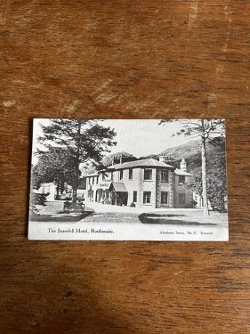
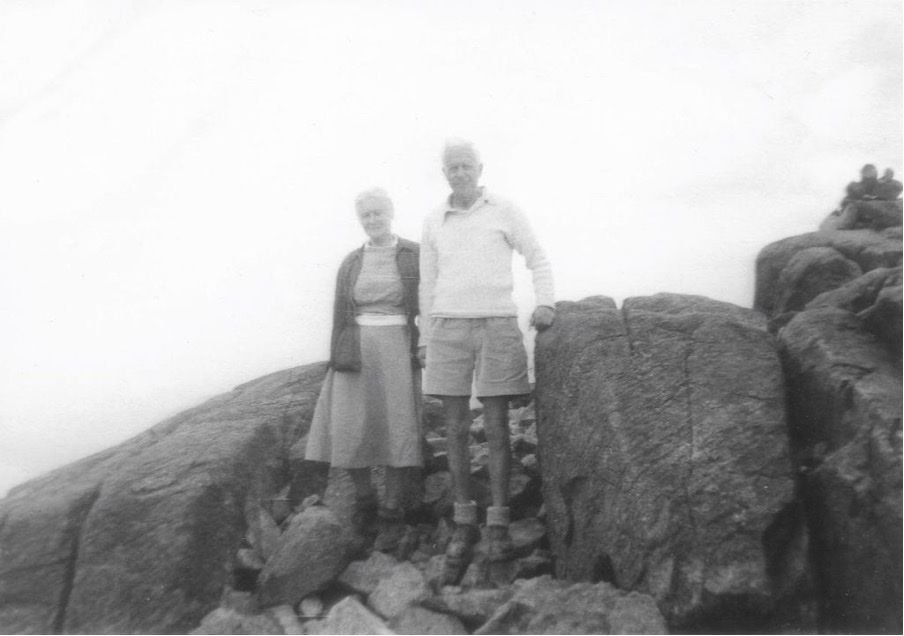
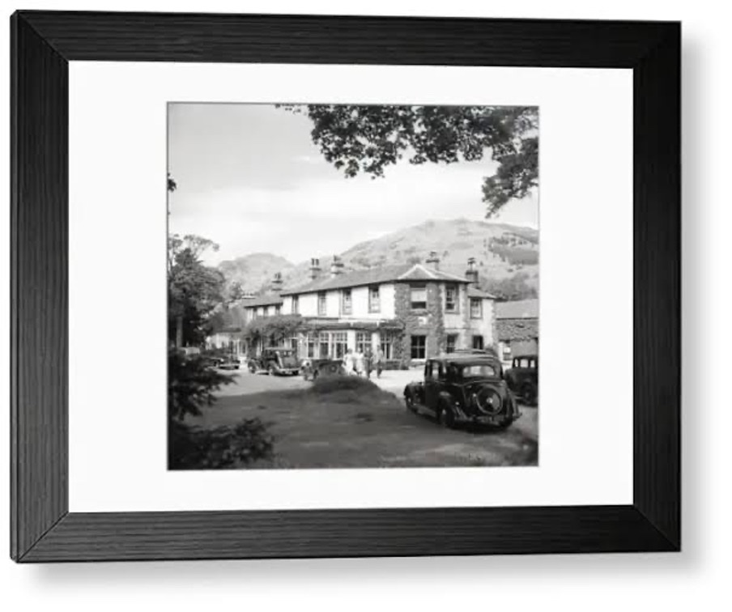
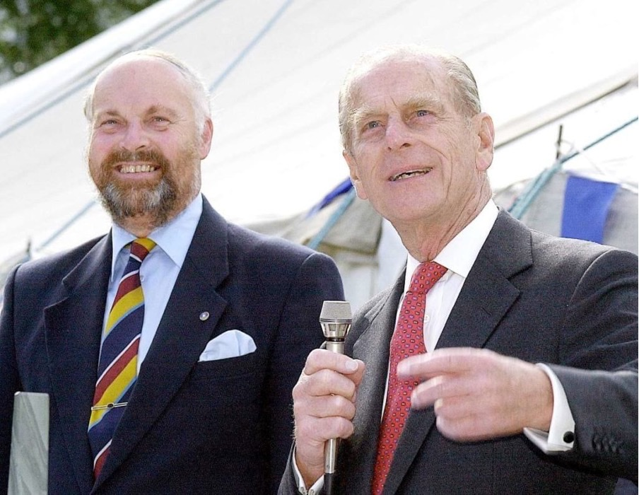

The Scafell Hotel in Rosthwaite, Borrowdale, is a historic Lake District property that began as a private home in 1816–1817 before evolving into a renowned coaching inn and hotel.

From private home to coaching inn
Built in 1816–1817: the original structure was built as a private residence for the artist Mary Barker.
Early mountaineer: Mary Barker was one of the earliest recorded women to scale nearby Scafell Pike, climbing alongside Dorothy Wordsworth, sister of the poet William Wordsworth.
Transition to an inn: over the 19th century, as tourism grew in the Borrowdale valley, the property transitioned from a private residence into a coaching inn and hotel.

Sir Barnes Wallis
The famous engineer and inventor of the “bouncing bomb” used in Operation Chastise during World War II was a regular visitor. He and his wife frequented the hotel and surrounding fells for over 52 years.
Whenever he came, he insisted on a large table in his room on which he could carry on with his engineering design work when the weather was inclement. To commemorate this, we made a suite in the hotel named after him, completed in 2008 along with further refurbishments of other rooms. To celebrate, the hotel had a fly-by of a GR4 Tornado from 617 Squadron, based at RAF Leuchars, using this as part of their training programme.

A magnet for mountaineers
The hotel has been a magnet for renowned climbers and walkers such as Sir Chris Bonington, Joe Brown, Alfred Wainwright and Eric Robson.
It hosted the 60th birthday party for television presenter and keen climber and hill walker Ian McNaught-Davis, up Napes Needle on Great Gable, and saw BBC Radio Stockholm correspondent Roger Wallis fill the hotel with reporters from all over the globe.

Princes at the Riverside Bar
The hotel has also had royal visitors, including the Prince of Wales stopping off at the Riverside Bar on one of his trips to the area, and the Duke of Edinburgh presenting prizes in 2001 to runners who had participated in the gruelling Borrowdale Fell Race, which has a long association with the hostelry.
Fifty years of stewardship
In 1971, Miles Jessop bought the hotel from the Badrock family, who had managed it for 47 years. Jessop ran the landmark hotel for over 50 years, adding features like the popular Riverside Bar.
The hotel today
The property sits in around five acres of grounds with 23 en suite bedrooms, a characterful 60-cover restaurant, lounges, and a self-contained Riverside Bar with seating for 50 which is popular with locals and hotel residents. There is also ample parking on site.
The hotel has a backdrop of Lakeland fells including Great Gable, Dale Head, High Spy, Scafell Pike and Great End, a particular attraction to seasoned walkers. Its close proximity to the banks of the River Derwent appeals equally to those seeking a gentler stroll.
Become part of the story
Stay where artists, engineers, mountaineers and royalty have stayed before you.
Book your stay today